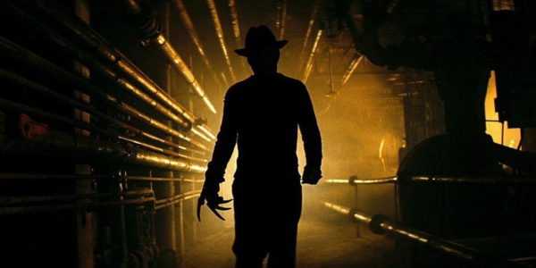
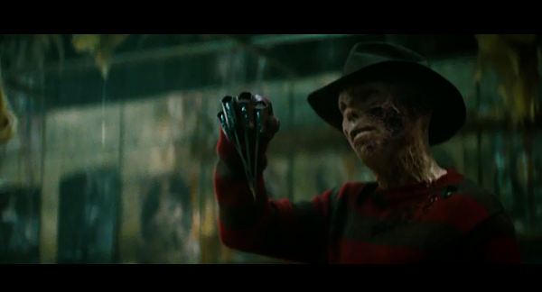

 A Nightmare on Elm Street is an American horror franchise that consists of nine slasher films, a television series, novels, and comic books. The films began with the film A Nightmare on Elm Street (1984) created by Wes Craven. The series revolves around the fictional character Freddy Krueger, a former child killer who after being burned alive by the vengeful parents of his victims, returns from the grave to terrorize and kill the teenage residents of Springwood, Ohio in their dreams. The original film was written and directed by Craven, who returned to co-script the second sequel, A Nightmare on Elm Street 3: Dream Warriors (1987), and to write and direct New Nightmare (1994). The films collectively grossed over $457 million at the box-office worldwide.
The original film was released in 1984. A series of sequels produced by the independent film company New Line Cinema followed. New Line often attributes the growth of their company to the success of the Nightmare series. The film series as a whole has received mixed reviews by critics, but has been a financial success at the box office. When comparing the United States box office grosses of other American horror film series, A Nightmare on Elm Street is the second highest grossing series in adjusted US dollars. In 1988, a television series was produced with Freddy as the host. The pilot episode focused on the night Freddy was burned alive by the angry parents of the children he had killed, though the rest of the series featured episodes with independent plots. Twelve novels, separate from the adaptations of the films, and multiple comic book series were published featuring Freddy Krueger, as well as a crossover film featuring fellow horror icon Jason Voorhees from the Friday the 13th franchise. A remake of the 1984 film was released in 2010, and a second remake is currently being planned.